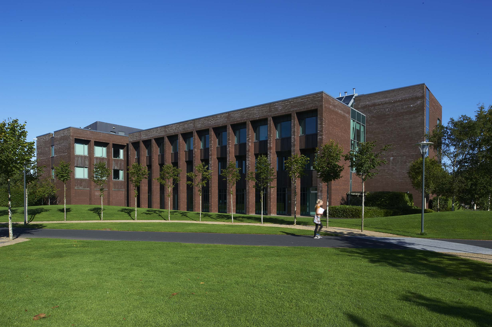
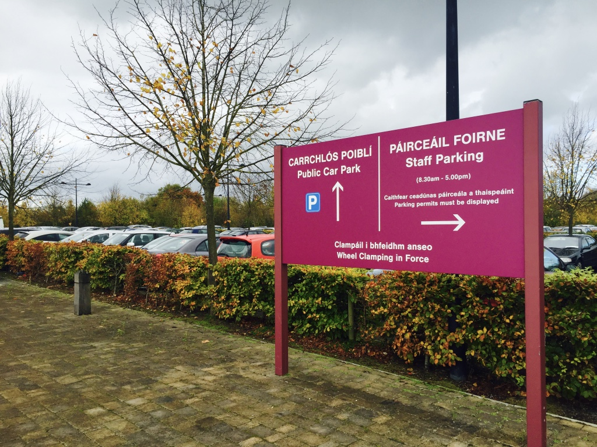
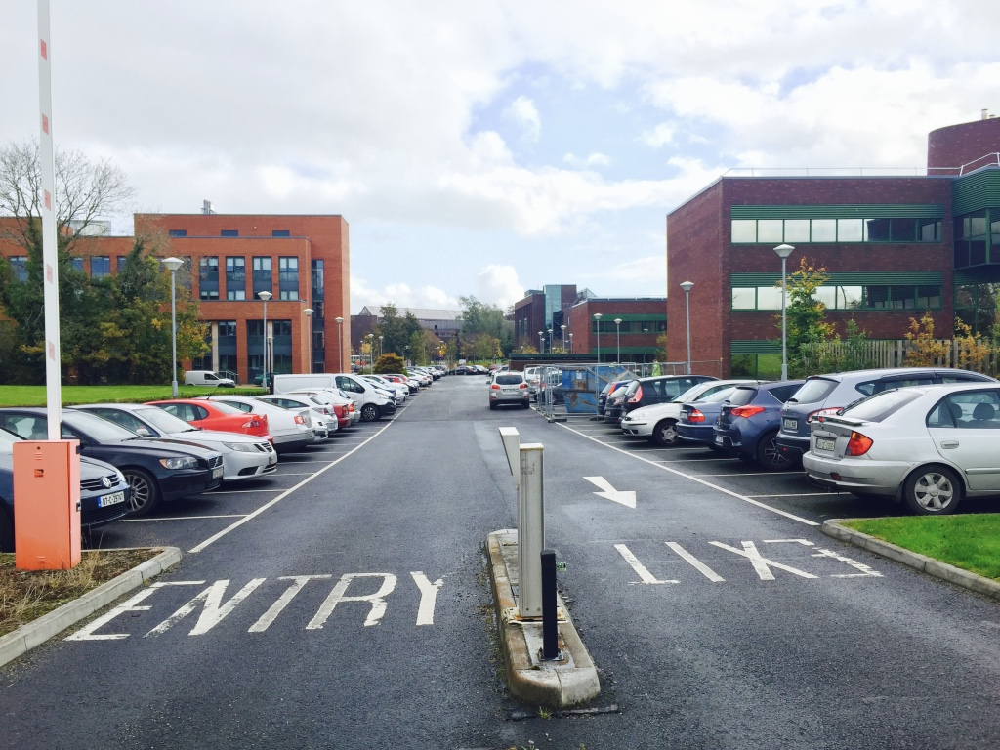
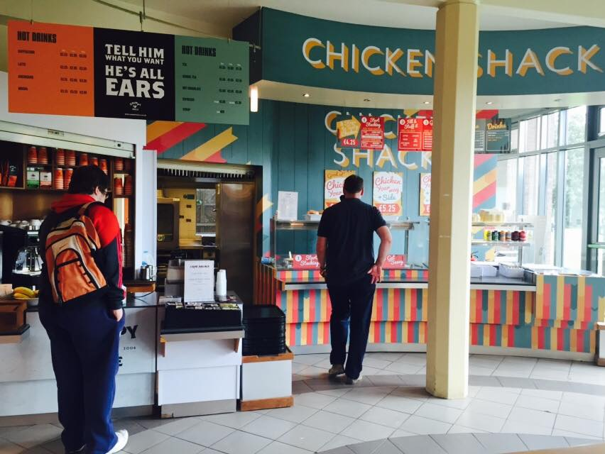
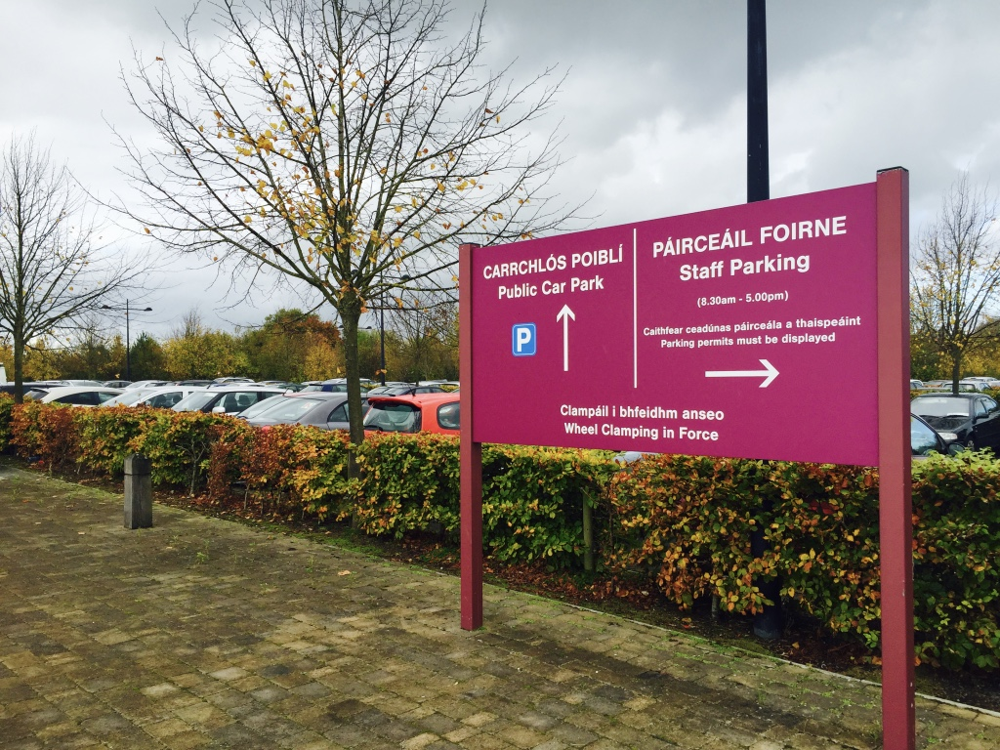
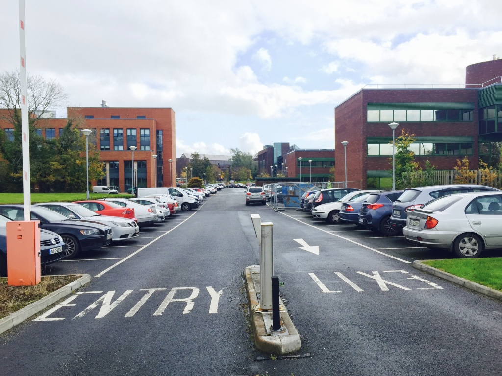

Previous
Computer Science Building





The Computer Science Building was completed in 2010. With an area of 4,000m2, the building is home to the Department of Computer Science and Information Systems, which is attached to the Faculty of Science and Engineering. The building has 2 teaching spaces, including the 210-seat Lecture Theatre CSG-001. Chicken Shack is located on the ground floor.
Useful Information
CHICKEN SHACK
Located on the ground floor of the building, Chicken Shack offers tea, coffee and food. Opening hours: 8.30 to 16.00 Monday to Thursday, 8.30 to 15.30 Friday.
CSIS Building Opening Hours
CSIS Building Opening Hours:
Monday to Friday: 8:30am - 9:00pm
Saturday & Sunday: Closed
Nearest Car Park
Car Park 17: Pay Car Park
Guide Me There
Car Park 18: Staff Car Park
Guide Me There
Car Park 21: Free Car Park
Guide Me There
Car Park 22: Staff Car Park
Guide Me There